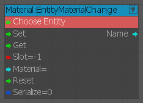
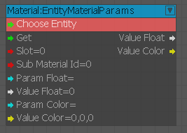
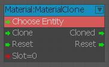
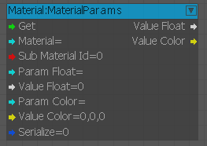
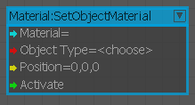

EntityMaterialChange
Used to apply the specified material to an entity.

EntityMaterialParams
Used to get the entity's material parameters.

Inputs
| Port | Type | Description |
|---|---|---|
| Get | Any | Activates the node |
| Slot | Integer | Material slot |
| SubMtlId | Integer | Submaterial ID |
| ParamFloat | String | Float parameter to be set |
| ValueFloat | Float | Sets float parameter value |
| ParamColor | String | Color parameter to be set |
| ValueColor | Vec3 | Color value to be set |
Outputs
| Port | Type | Description |
|---|---|---|
| Value Float | Float | Current float value |
| Value Color | Vec3 | Current color value |
MaterialClone
Used to clone an entity's material or reset it back to the original.

Inputs
| Port | Type | Description |
|---|---|---|
| Clone | Any | Activates the node |
| Reset | Any | Resets to the original material |
| Slot | Integer | Material slot |
Outputs
| Port | Type | Description |
|---|---|---|
| Cloned | Any | Activated when material is cloned |
| Reset | Any | Activated when material is reset |
MaterialParams
Used to get the specified material's parameters.

Inputs
| Port | Type | Description |
|---|---|---|
| Get | Any | Activates the node |
| Material | String | Material name |
| SubMaterial Id | Integer | Submaterial name |
| ParamFloat | String | Float parameter to be set |
| ValueFloat | Float | Value of the float parameter |
| ParamColor | String | Color parametetr to be set |
| ValueColor | Vec3 | Value of the color parameter |
| Serialize | Boolean | Serialize the change |
Outputs
| Port | Type | Description |
|---|---|---|
| Value Float | Float | Current float value |
| Value Color | Vec3 | Current color value |
SetObjectMaterial
Used to set an object's (render node) material to the specified position.

Inputs
| Port | Type | Description |
|---|---|---|
| Material | String | Set object material |
| ObjectType | Integer | Object type |
| Position | Vec3 | Position to set material at |
| Activate | Any | Activates the node |